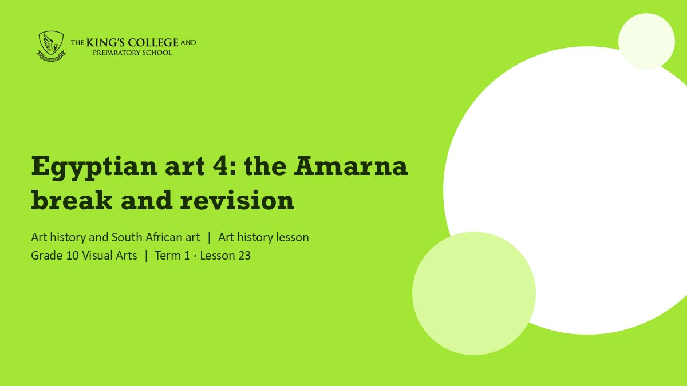

Term 1 · Lesson 23 · Art history lesson
Egyptian Art 4: The Amarna Break and Revision
Start Here
Today I Will
- Explain what changed in Amarna art and why
- Compare Amarna art with earlier Egyptian art
- Make a revision summary of the Egyptian era
For about 1 500 years Egyptian art hardly changed. What would it take to change the rules overnight?
Words to Know
| Word | Meaning |
|---|---|
| Amarna | The new capital built by Akhenaten; also the name for the art of his short reign. |
| Naturalism | Showing people and things as they really look, rather than by fixed rules. |
| Convention | An accepted rule or way of doing things that artists follow, such as the composite view. |
| Aten | The sun disc that Akhenaten made the only god of Egypt during his reign. |
| Revision | Going back over work in an organised way so that you understand it and can recall it in a test. |
Slides

Notes
Akhenaten's break with tradition (the Nefertiti bust); what changed and why; revising the Egyptian era for the cycle test.
Before and During Amarna
| Old Kingdom tradition (e.g. Menkaure) | Amarna period (c. 1353–1336 BCE) |
|---|---|
| Many gods, with Amun-Re as a chief god | Akhenaten made the Aten, the sun disc, the only god |
| Rigid, frontal, symmetrical figures following the canon | Curving outlines, long faces, narrow chins and full lips |
| Formal, distant rulers | Family scenes: the king and queen play with their daughters under the sun's rays |
| Ideal, unchanging bodies | More relaxed and natural poses, though still stylised in their own way |
Bust of Nefertiti (c. 1345 BCE)
- Artist and medium: Attributed to the sculptor Thutmose. Limestone covered with painted plaster. Now in the Neues Museum, Berlin.
- Naturalism: Fine cheekbones, a long, graceful neck and a calm expression look strikingly life-like.
- Balance: The tall flat-topped crown balances the forward-leaning neck, giving an elegant, poised silhouette.
- Unfinished eye: One eye has its inlay and the other is empty. It may have been a workshop model.
- Focus Theme links: The ideal versus the real; beauty and aesthetics; and who should own objects taken from their country of origin.
At Amarna the rules bent because the beliefs changed; when the beliefs returned, so did the rules.
Practical
You need: History booklet, visual journal, A3 paper
Compare, Then Summarise the Era
- Compare the Bust of Nefertiti with King Menkaure and Queen in your VJ under: pose, line, realism and purpose.
- Write one FET sentence for line on each work: identify, describe, effect.
- Start an A3 revision summary of Egyptian art: a mind map or a one-page table.
- Include beliefs, the canon and conventions, sculpture and relief, pyramids and temples, Amarna.
- Add the five key works with date and medium, and five key terms with meanings.
- Mark with a star anything you are unsure of and ask about it before the cycle test.
Test Yourself
- Name the god that Akhenaten made the only god of Egypt.
- Give two ways in which Amarna art differs from earlier Egyptian art.
- Explain why Egyptian art went back to the old style after Akhenaten's death.
Show answers
1. The Aten (the sun disc). 2. Any two: curving outlines instead of rigid poses; elongated faces and bodies; relaxed family scenes; more naturalistic detail. 3. The next rulers restored the old religion, and because art was so closely tied to belief, the old conventions returned with the old gods.
Finished Early?
Take a side on the Bust of Nefertiti and back it up.
- Write 'Real or ideal?' at the top of a VJ page.
- List two pieces of visual evidence that the bust looks real, and two that it looks ideal.
- Write a short paragraph of 4 to 5 sentences choosing one side, using your evidence.
- Finish with one sentence linking your answer to the Focus Theme 'the ideal versus the real'.